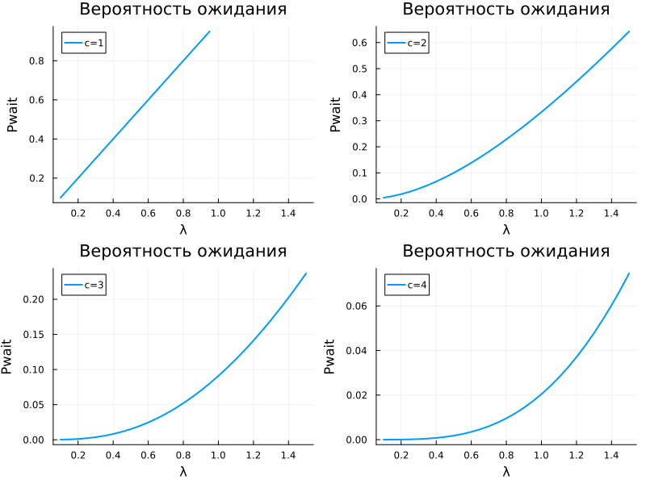
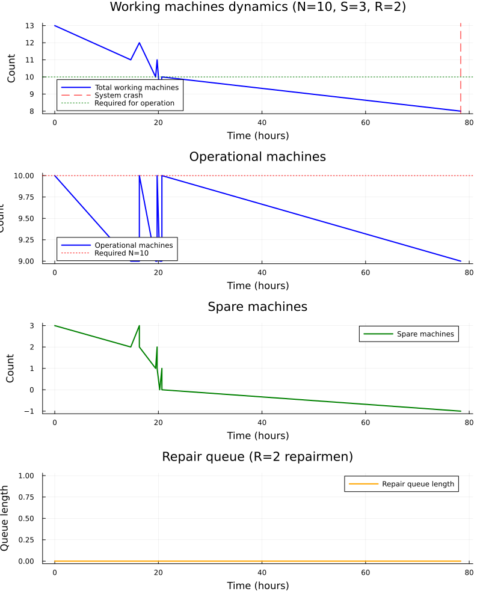

title: Лабораторная работа 7 license: CC BY date: 2026-05-16 author: Еремина Оксана Андреевна —
Реализовать модели М/М/с и Росса в Julia с использованием дискретно-событийного моделирования и сравнить результаты симуляции с аналитическими формулами.
Основные параметры:
Аналитические характеристики:
Параметры:
Логика:
Скачала необходимые пакеты, сгенерировала нужные файлы (jupyter notebook, чистый код и quarto)
| Характеристика | Значение |
|---|---|
| Загрузка | 0.9 |
| P | 0.0526 (5.26%) |
| L_q | 7.674 заявок |
| W_q | 8.526 часа |
| W | 10.526 часа |

Параметры: N = 10, S = 3, R = 2
Интенсивности:

| (N, S, R) | Симуляция | Аналитика | Отклонение |
|---|---|---|---|
| (10,2,1) | 34.7 ч | 33.3 ч | +4.2% |
| (10,3,1) | 44.9 ч | 44.4 ч | +1.0% |
| (10,2,2) | 34.7 ч | 31.5 ч | +10.2% |
| (10,3,2) | 44.9 ч | 42.0 ч | +6.9% |
Вывод: отклонение 1-10% — модель корректна
Максимальное время до падения: 65.5 ч (N=5, S=3, R=2)
Минимальное время до падения: 33.4 ч (N=10, S=2, R=2)
Цель достигнута. Модели М/М/с и Росса успешно реализованы на Julia с использованием пакета ConcurrentSim.